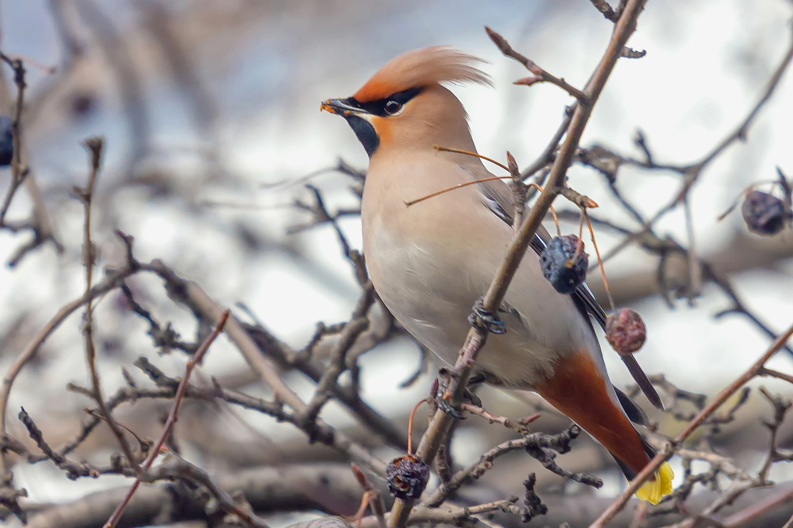
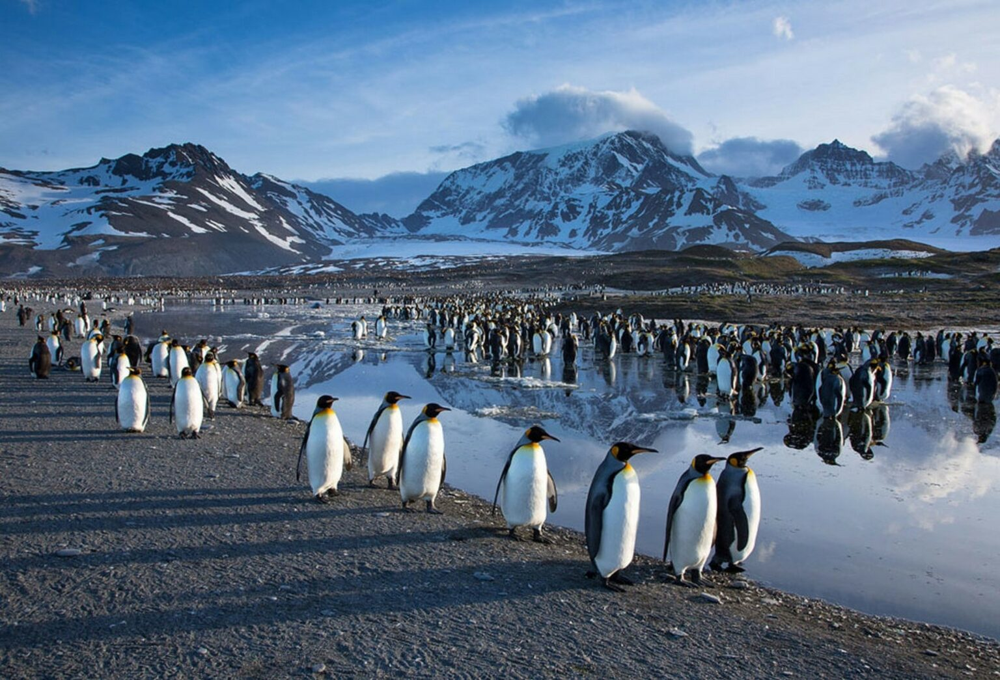

|
Меню
|
Птицы Антарктиды  Птицы Антарктиды Полностью сухопутные млекопитающие в Антарктиде отсутствуют. Из полуводных наземных животных этого класса на берег выходят тюлени: Уэдделла, тюлени-крабоеды, морские леопарды, Росса, морские слоны. Из дельфинов у берегов Антарктиды (у Шетландских островов, 68°S) обнаружен крестовидный дельфин. |